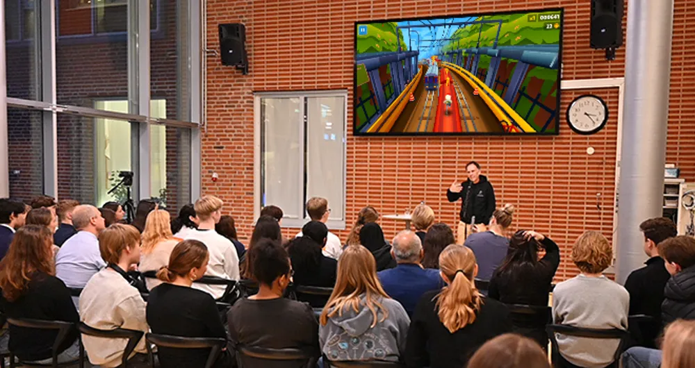

Inrikes

SL planerar att börja använda klockor till 2030
I SL:s ständiga försök att modernisera och digitalisera har de framfört ett nytt initiativ för att förbättra pålitligheten för tåg- och bussnätverk - de ska använda klockor. Allt började när Ann Carlos vaknade en morgon, "larmet gick och det var då snilleblixten slog mig". Carlos förde hastigt sin idé fram till David Lagneholm, i Regionfullmäktige. Lagneholm var först skeptisk men efter att ha sett en prototyp på klockan gav han grönt ljus till projektet.
Operation hare, som projektet döptes till, håller på att designa en ny slags klocka som visar mer än bara en tid på dygnet. Namnet är som en referens till den gamla fabeln om sköldpaddan och haren. Enligt den nuvarande tidsplanen så kommer en majoritet av SL:s tunnelbanor och bussar vara installerade med klockor innan decenniet är slut.